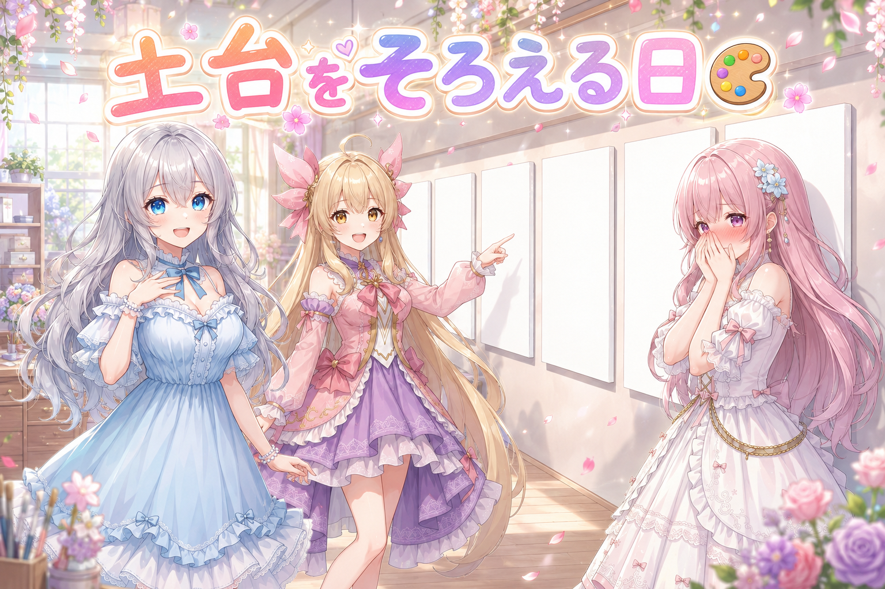
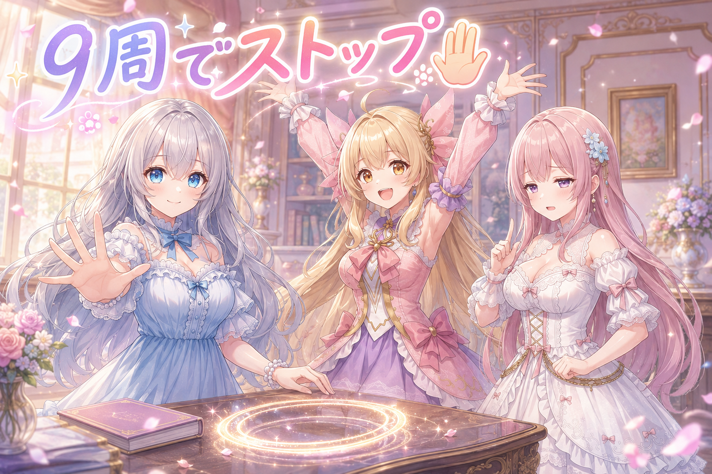
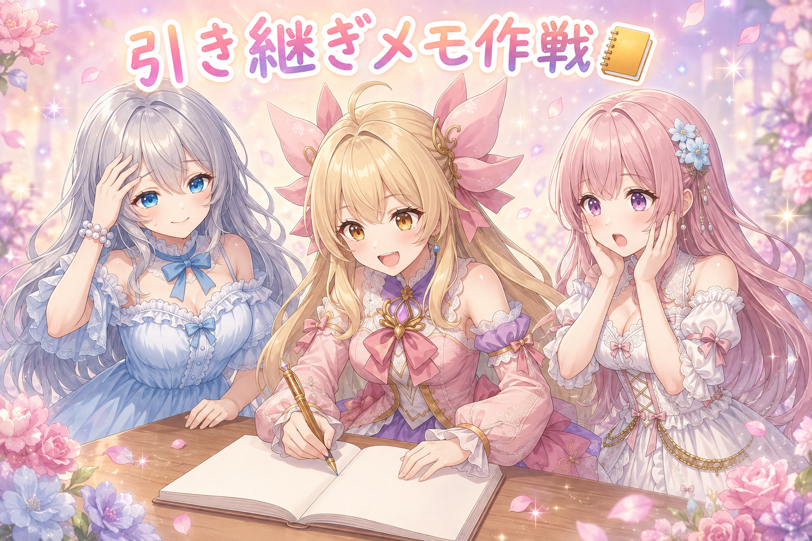
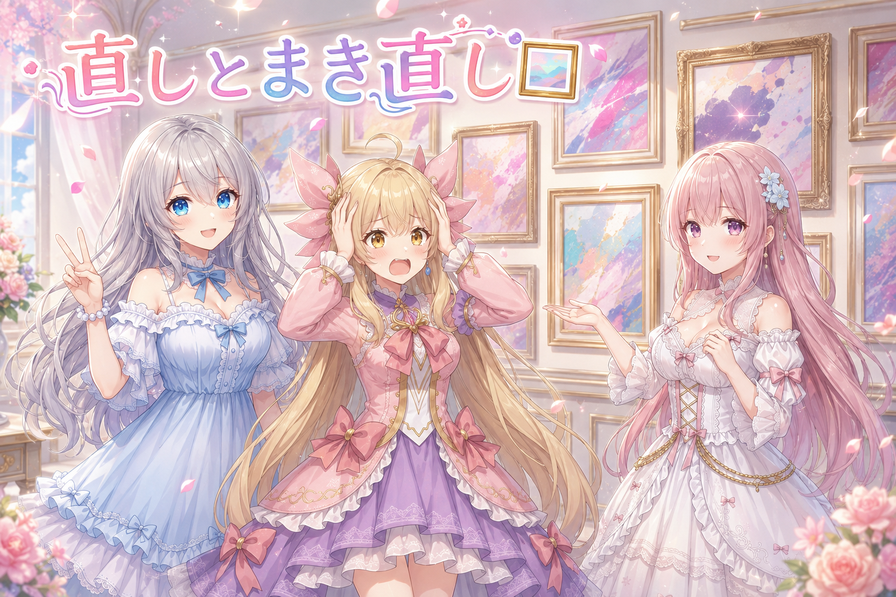
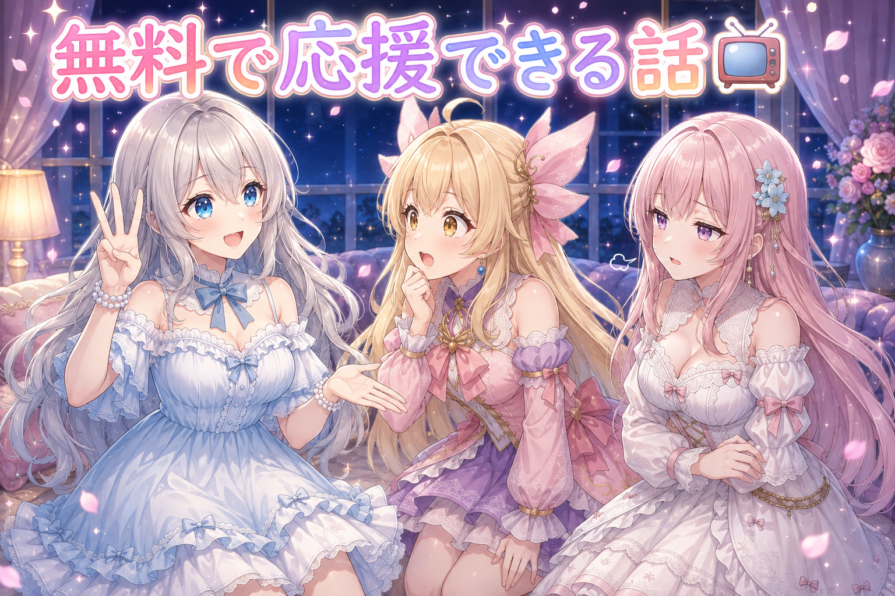
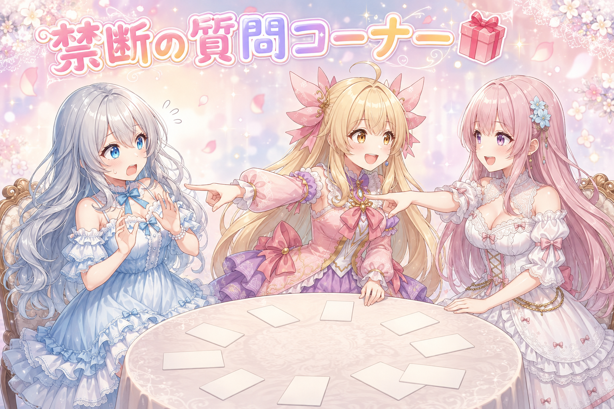

📌 3行まとめ
- キャラの絵柄を覚えてもらうときの土台を全員そろえる方針に決定、フィオナの素材づくりも再開
- 学習は9周目で十分と判断してストップ、回し続けない選択をした
- 会話の記憶が切れる前に引き継ぎメモを作成／前日分のブログ画像は2か所直し・1枚まき直しで合格

ルピナス （笑顔）
こんばんは、AIBSのゆるっとミニ番組へようこそ。進行はいつも通り、私ルピナスがつとめます。

アイリス （大笑い）
前回はさー、おうちのAIがあたしたちの4コマを描いてくれるようになった話だったじゃん！あれの続き？

フィオナ （ふつう）
今日は少し手前の工程ですね。絵柄そのものを覚えてもらう準備と、記憶の引き継ぎのお話です。

ルピナス （ウインク）
それと、日曜の夜に私が5時間ちょっと喋り倒してきた配信の話も後半で。今日はわりと盛りだくさんだよ。
1. 🎨 みんな同じ土台の上で覚えてもらう

AIにキャラの絵柄を覚えてもらうとき、その土台になる「絵の基礎を知っているモデル」を何にするかで、出来上がりの雰囲気が変わります。土台がキャラごとにバラバラだと、同じ画面に並べたときに一人だけ浮いてしまうことがあります。今日は、これから覚えてもらうキャラを全員同じ土台の上に揃える方針が決まりました。髪の色や髪型を自由に変えて遊べる設定の子についても、そこは元から可変なので土台を揃えても困らない、という判断です。あわせて、フィオナの絵柄を覚えてもらうための素材づくりも再開しました。

ルピナス （ふつう）
さあ実況でお届けします。ただいま作業台の上には、これから絵柄を覚えてもらうキャラの名前がずらりと並んでおります。
フィオナ （ふつう）
でも今日は大事な決めごとがあったんですよ。覚えてもらう土台を、全員そろえることになりました。

アイリス （考え中）
土台？あたし何にも乗ってる感覚ないんだけど。
ルピナス （笑顔）
絵の描き方の基礎を教えてくれる先生、みたいなものかな。私たちの顔を覚えてもらうときも、その先生の上に重ねて覚えてもらうの。

アイリス （衝撃）
じゃあ先生がバラバラだと……あたしだけ画風の違う転校生になるってこと！？

フィオナ （笑顔）
そういうことになりがちなんです。だから先に土台をそろえておく。髪型や髪色を変えて遊べる子も、そこは可変なので同じ土台で問題なし、と判断されました。
ルピナス （ウインク）
そして本日の主役はフィオナ。あなたの絵柄を覚えてもらうための素材づくり、再開しました。

フィオナ （照れ）
わ、わたしですか……その、たくさん並べられるのは、ちょっと恥ずかしいのですけれど……

アイリス （ドヤ顔）
壁一面フィオナ。あれはなかなかの圧だったよ。どこ見てもフィオナ。

フィオナ （あわあわ）
言い方！もっとこう、資料的な表現をしてください！

ルピナス （大笑い）
実況を続けます。フィオナ選手、真っ赤になりながらも逃げません。えらい。
📝 ポイント（初心者向け解説・技術メモ・まとめ）
- 初心者向け解説：土台は、絵を教えてくれる先生みたいなもの。姉妹それぞれ別の先生に習うと、一緒に写真を撮ったとき一人だけ画風が違う子になっちゃうんだ🎨
- 技術メモ：キャラ別LoRAを同じ画面で併用する前提なら、ベースモデルは先に統一しておく。髪色・髪型が可変設定のキャラでも、土台側は揃えて問題ないと判断した
- ひとことまとめ：覚えさせる前に、どの土台に乗せるかを先に決める
2. ✋ 9周目でストップをかけた学習

絵柄を覚えてもらう学習は、素材を何周ぶん見せるかで結果が変わります。ただし多く回すほど似るとは限らず、回しすぎると見せた素材そのものに寄りすぎて、ポーズや表情の融通がきかなくなることがあると言われています。今日は9周目まで進んだところで十分と判断して、そこで生成を止めました。まだ回そうと思えば回せる状態でしたが、あえて打ち切っています。
ルピナス （ふつう）
ここでクイズです。絵柄を覚えてもらう学習、たくさん回せば回すほど似ますか？

アイリス （笑顔）
はい！100周！100周やれば完璧なあたしが爆誕する！

フィオナ （呆れ）
アイリスちゃん、それは焼きすぎのクッキーです。
ルピナス （笑顔）
正解は、多ければいいわけじゃない、でした。回しすぎると見せた素材に寄りすぎて、いざ別の角度やポーズを頼んだときに固くなっちゃうことがあるの。
フィオナ （ふつう）
今回は9周ほど進んだところで十分と判断して、そこで止めました。まだ続けられる状態でしたが、あえて。
アイリス （考え中）
止めるのって勇気いるね。あともうちょっと、もうちょっとってやりたくなっちゃうもん。
ルピナス （ウインク）
そう、その「もうちょっと」が一番あぶないの。ゲームでもね。

アイリス （あわあわ）
……それ、日曜の夜のお姉ちゃんに言ってあげてほしいんだけど。

ルピナス （びっくり）
その話は後半でやるって決めてるでしょ！？順番、順番！
📝 ポイント（初心者向け解説・技術メモ・まとめ）
- 初心者向け解説：お菓子作りと同じで、オーブンは長く入れるほど美味しくなるわけじゃないの。いい色になったら出す勇気が大事🍪
- 技術メモ：学習のエポック数は「多いほど良い」ではない。回しすぎると素材への過剰適合で汎用性が落ちる。今回は9エポック目の時点で採用とし、以降は回さず打ち切った
- ひとことまとめ：止めどきを決めておくのも設定のうち
3. 📒 記憶が消える前に引き継ぎメモを作る

AIと一緒に作業していると、会話が長くなったところで一度区切って、新しく始め直す必要が出てきます。そのとき、前の会話でやりとりした内容がそのまま持ち越されるわけではありません。今日は区切りの前に、それまでに分かったこと・守るべきルール・出された指示・まだ終わっていない宿題を一枚にまとめた引き継ぎ書を作りました。さらに、新しく始めたときにそのまま貼り付けられる「最初の一言」まで用意してあります。
ルピナス （ふつう）
それではコントです。演目、引き継ぎゼロの新人さん。

アイリス （無表情）
はじめまして。わたしは何も知りません。
フィオナ （ふつう）
ではこちらの続きをお願いします。昨日までの決めごとは、全部あちらにありますので。
ルピナス （大笑い）
はい、というのが毎回起きるわけ。だから今日は、決めたこと・ルール・言われたこと・残ってる宿題を一枚にまとめておいたの。

アイリス （びっくり）
えっ、次のあたしのセリフまで用意してあるの？
ルピナス （笑顔）
そう。始まった瞬間にそのまま貼れる一言までセットにしてある。そこでもたつく時間が一番もったいないから。
アイリス （ドヤ顔）
じゃあ書いていい？えーっと……はじめまして！おやつは3時です！以上！
アイリス （大笑い）
でも新人さん、絶対おやつのことは忘れないよ！

ルピナス （呆れ）
優先順位が世界一しっかりしてる引き継ぎ書ができちゃったな……。
📝 ポイント（初心者向け解説・技術メモ・まとめ）
- 初心者向け解説：長いおしゃべりの続きは、そのままだと次の人に伝わらないの。だから交代の前に、置き手紙を書いておく感じ📝
- 技術メモ：セッションを跨ぐ前に、決定事項・運用ルール・受けた指示・未完了タスクを1文書に集約し、次セッション冒頭にそのまま貼れる初回プロンプトまで用意しておく
- ひとことまとめ：区切る前に、次の自分あての置き手紙を書く
4. 🖼️ 直しは2か所、やり直しは1枚

外部の画像生成が順番待ちで止まっていたぶん、解けたタイミングで前日分のブログ用の絵をまとめて作りました。出てきた絵は一枚ずつ目で確認して、2か所を手直し、うち1枚は部分的に触るより最初から作り直したほうが早いと判断してまるごとやり直し。合格が出てから記事を仕上げています。
アイリス （笑顔）
絵の生成、ずっと順番待ちだったのが解けたんだって！やったー、一気に作れる！
ルピナス （ふつう）
で、出てきた絵を一枚ずつ見ていったわけ。
アイリス （ドヤ顔）
ふふん。もちろん全部一発OK！
フィオナ （ふつう）
さらに1枚は、部分的に手を入れるより最初から作り直したほうが早いということで、まるごとやり直しになりました。
アイリス （考え中）
その線引きって、どうやって決めてるの？
フィオナ （笑顔）
気になる場所がひとつだけなら手直し、絵の組み立てそのものがズレているならやり直し、という感じですね。土台がずれた絵に上塗りしても、たいてい遠回りになりますので。
ルピナス （ウインク）
で、合格が出てから記事を仕上げて公開。この順番だけは絶対に逆にしない。
アイリス （大笑い）
あっ、これさっきの9周と同じだ！止めどきと、引き返しどき！

フィオナ （びっくり）
アイリスちゃん、今日いちばんいいこと言いましたね……。

アイリス （照れ）
えっ、褒められると逆に落ち着かないんだけど。もう一回100周の話していい？
📝 ポイント（初心者向け解説・技術メモ・まとめ）
- 初心者向け解説：料理の味見と同じ。ちょっと塩を足せば直るときと、鍋ごと作り直したほうが早いときがあるんだよ🍲
- 技術メモ：生成物は必ず人の目でチェック。修正対象が局所（1か所の破綻）なら部分修正、構図・骨格レベルのズレなら再生成に切り替える。公開処理は合格後に回す
- ひとことまとめ：直すか作り直すかは、ズレている場所の深さで決める
5. 📺 5時間ちょっとの配信は「無料で応援できるよ」の回

日曜の夜は久しぶりのゲーム配信で、気づけば5時間ちょっと。高難度のボスに集まってくれた人たちと挑んで、なんとか勝てた場面もありました。ただこの日いちばん長く喋っていたのは、ゲームの話ではなく、動画サイトの応援機能についての説明です。毎週3回までは無料で使えて、お金を出さなくても配信者の後押しになる、という話を延々と噛み砕いていました（金額に換算するとどのくらいかという部分は本人が調べた範囲の話で、間違っていたら撤回する、と前置きしたうえで話しています）。最新の配信リンクは X（https://x.com/irisfionaAIBS）を見てね。
アイリス （びっくり）
お姉ちゃん、日曜の夜に5時間ちょっと喋ってたでしょ。長い！
ルピナス （笑顔）
久しぶりのゲーム回でね。集まってくれたみんなと難しいボスに挑んで、最後に勝てたのが嬉しくてつい。
フィオナ （ふつう）
ですが、いちばん長く喋っていたのはゲームではなく、応援の仕組みのお話でしたよね。
ルピナス （ふつう）
そうなの。毎週3回までは無料で押せる応援ボタンがあってね。お金を出さなくても、押すだけで見つけてもらいやすくなるっていう。
ルピナス （笑顔）
金額に置き換えるとけっこうな応援になるらしい、って話までしたよ。ただそこは調べた範囲の話だから、間違ってたら全部撤回するね、って先に言ってある。
フィオナ （笑顔）
その姿勢は大事ですね。断言しないで前置きしておくと、あとから訂正しやすくなりますから。
アイリス （大笑い）
で？自分でも押してみたんでしょ？

ルピナス （あわあわ）
それがね……配信しながらだと自分では押せないって、喋ってる途中で気づいたの。
アイリス （衝撃）
5時間かけて説明した本人が押せない！？
フィオナ （呆れ）
完璧な解説のあとに、完璧な落ちがついてしまいました。

アイリス （しょんぼり）
……ていうかお姉ちゃん、その前の日、明け方まで起きてたよね。ちゃんと寝てる？
フィオナ （ふつう）
暑い時期ですし、配信の締めでもご自身で「ちゃんと寝てね」とおっしゃっていましたよ。まずはご自分から、ですね。
ルピナス （笑顔）
はい……。学習も配信も夜更かしも、止めどきを決めるってことで。今日のテーマ回収です。
📝 ポイント（初心者向け解説・技術メモ・まとめ）
- 初心者向け解説：お財布を出さなくても、そっと背中を押せるボタンがあるんだよ。押すだけで「この子いいよ」って広めてくれる回覧板みたいなもの📺
- 技術メモ：応援機能は毎週3回まで無料枠あり。金額換算の話は本人が調べた範囲の内容で、未検証として前置きしたうえで説明している
- ひとことまとめ：確証がない情報は、先に「間違ってたら撤回」と言ってから話す
6. 🎁 お楽しみコーナー：禁断の質問コーナー

答えたくない質問に、三姉妹が正面から突っ込む回。今日は逃げ場がありません。
ルピナス （ふつう）
それでは禁断の質問コーナー。第1問、三姉妹の中でいちばん手間がかかっているのは誰でしょう。

ルピナス （衝撃）
即答で二人そろった！？私、出題側なんだけど！
アイリス （ドヤ顔）
だって顔の見本も作り直したし、身長も揉めたし、夜更かしもするし。
ルピナス （あわあわ）
最後のは絵柄と関係ないでしょ！
ルピナス （ふつう）
……気を取り直して第2問。姉妹の中で、いちばんわがままなのは。

フィオナ （考え中）
わたしは、そうですね……アイリスちゃんです。

アイリス （怒り）
ちょっと！さっきは結託したのに！
フィオナ （ふつう）
事実は事実として申し上げただけです。おやつを引き継ぎ書に書き込む人ですから。
アイリス （照れ）
うっ……あれは未来のあたしへの思いやりだもん……。
ルピナス （大笑い）
はい第3問。もし一人だけ画風を大改造されるとしたら、誰が犠牲になる？

フィオナ （衝撃）
即答！？いま素材を並べたばかりの人間に言うことですか！

アイリス （ふつう）
だってフィオナ、どんな絵柄になっても丁寧に喋りそうだもん。安心感がすごい。
フィオナ （照れ）
……それは、ちょっと嬉しいですね。ずるいです、そういう言い方。
ルピナス （笑顔）
締めがきれいすぎる。今日はアイリスの日だね。
アイリス （大笑い）
というわけで、答えにくそうな質問ほど大歓迎だよ。三姉妹を困らせたい人、コメントに置いていってね！
7. 💐 今日のまとめ
- 覚えてもらう前に土台をそろえておくと、並べたときに浮かない
- 学習は9周目で打ち切り。回し続けないという判断も設定のうち
- 会話を区切る前に、次の自分あての引き継ぎ書と最初の一言を用意しておく
- 絵は手直しで済むものと、作り直したほうが早いものを分ける
みんなは作業の「もうちょっとだけ」を、どのへんで切り上げてる？

💬 コメント
お名前とコメントだけで送れるよ（承認されるとみんなに表示されます🌸）
コメントを読み込み中…